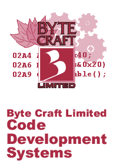

 Using C to Sense You can use a port pin to sense a variable capacitor (varied by the user's finger), to determine finger presses. | Touch Sensitive SwitchWalter Banks, Byte Craft Limited A touch-sensitive switch is very easy to implement with a microprocessor. The principle of the touch-sensitive switch is based on the rate of voltage rise on a capacitor that is supplied with a constant current source. When a constant current source is applied to a capacitor, the voltage will rise linearly with time.
The value of C is very low when the capacitor is a small plate on a printed circuit board. The value of C rises significantly when a finger is pressed on the plate, separated by a thin layer of insulation material. The number of free electrons in the finger acts like a virtual ground, brought into close proximity to the insulated plate; this effectively increases the value of the plate capacitance. The touch-sensitive switch uses a port pin of a microcomputer to sense voltage on the capacitor. Create a port-controlled constant current source with a series 500K resistor, on a single port output pin. Toggling the pin between 0 and 1 will turn off and on the current source. A current step function is applied to the capacitor, and the capacitor voltage is measured after 5 microseconds. If the capacitor voltage is higher than the trip voltage on the port, then the capacitor value is low and no finger press is detected. If the voltage has not risen to the trip point on the port, then the capacitor value is high and a finger press is detected. The following is a practical example of a touch sensitive switch:
The basic construction of the touch switch is a printed circuit pad overlaid with a thin layer of insulating material. Heat shrink plastic can be used. A port Pa puts out a step from 0 to Vcc through a 0.5M resistor (470K or 560K); 5 microseconds later, the port at Pb samples the value on the touch plate (which is insulated from the finger). A sampled 1 indicates nothing touching the plate. A sampled 0 indicates that the capacitor has not charged up to the switching threshold of Pb. I have used these in a variety of ways, usually etching the plate directly on a PC board and using a heat shrink plastic as an insulator. The following code fragment illustrates the programming approach. The function touch_switch_init is used to initialize the microprocessor's ports. The function touch_switch is called whenever the status of the touch switch needs to be determined: touch_switch returns a 0 if the switch is not touched, and a 1 if it is being pressed. void touch_switch_init (void) In simple applications where you need only one or two switches, the following circuit will also work.
This requires a single port bit, that outputs a 0 and discharges the capacitive switch. The port data direction is changed and sampled 5 microseconds later. A 0 indicates the presence of a finger, and a 1 the absence of a finger. Use the following code fragment with this circuit. char touch_switch (void) |